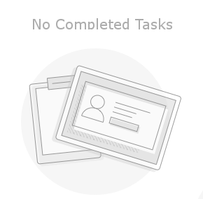

<ion-header>
  <ion-navbar color="burple">
    <ion-title>
      Completed Tasks
    </ion-title>
  </ion-navbar>
</ion-header>

<ion-content>
  <div id="empty" class="emptyCategory" *ngIf="completedItems?.length == 0">
    
  </div>
  <ion-list class="login-sliding-demo">
    <ion-item-sliding *ngFor="let item of completedItems;">
      <ion-item (click)="goToTaskDetail(item, item.id)">
        <p>
          <s>Title:
            <strong>{{item?.taskTitle}}</strong>
          </s>
        </p>
        <ion-note>Completed on {{item?.taskCompletionTime}}</ion-note>
      </ion-item>

      <ion-item-options side="left">
        <div *ngIf="taskAlertToggle==true; else showNoAlert">
          <button ion-button color="danger" (click)="showConfirm(item)">
            <ion-icon name="trash"></ion-icon>
            Delete
          </button>
        </div>
        <ng-template #showNoAlert>
          <button ion-button color="danger" (click)="delete(item.id)">
            <ion-icon name="trash"></ion-icon>
            Delete
          </button>
        </ng-template>

      </ion-item-options>

      <ion-item-options side="right">
        <button ion-button color="secondary" (click)="restore(item, item.id)">
          <ion-icon name="swap"></ion-icon>
          Restore
        </button>
      </ion-item-options>
    </ion-item-sliding>
  </ion-list>
</ion-content>